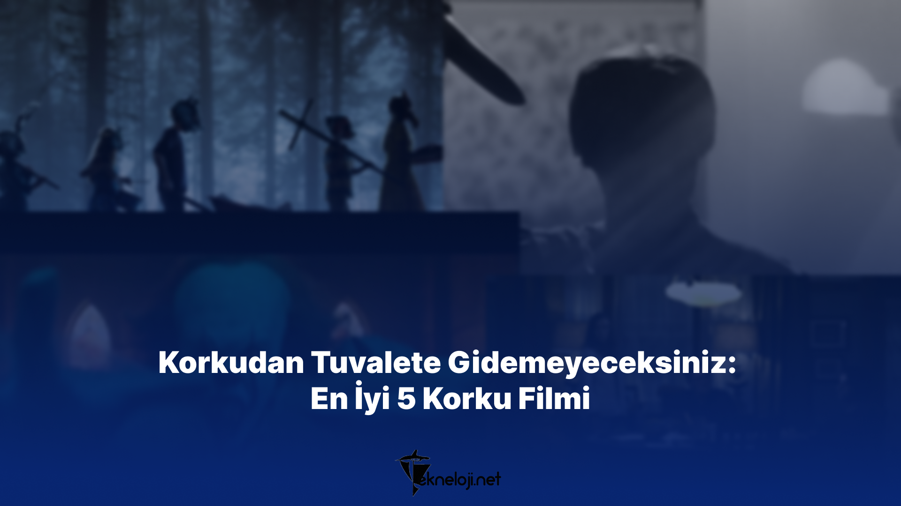

Tekneloji Post Design
Featured images of websites are very important. The prominent visual with attractive and beautiful design always attracts more users. This design I made for Teknoloji organizes it according to every content.
Programs and languages used:
Figma
Different used:
Some used examples.
